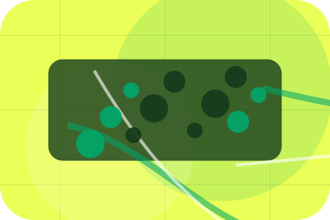
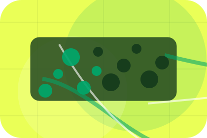
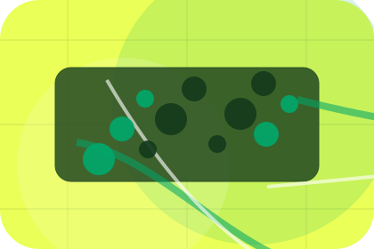
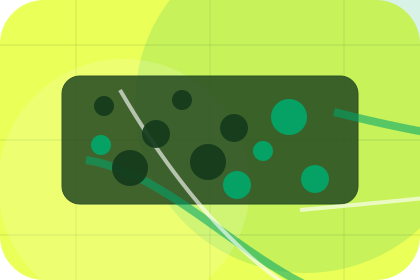

Pressure
Need names the real friction visitors bring to the home route, so the page feels relevant before any claim is made.
Transport
Map-first route planner for safe reliable movement.

Home / 02
Need frames the pressure behind the visit, then connects it to a practical path visitors can recognise and act on.
The copy avoids blame and panic. It shows the common friction, the practical consequence, and the calmer route Ride uses to move people forward.
Open CompanyNeed names the real friction visitors bring to the home route, so the page feels relevant before any claim is made.
The copy connects that friction to practical risk, delay, confusion, or missed opportunity without exaggerating it.
The final cue moves visitors toward a clearer route instead of leaving them with the problem alone.
Home / 03
Safety adds professional context to the home route, using the map-first route planner structure to support safe reliable movement before visitors choose a next step.
Ride uses transit route cards and focused copy to make the decision easier to scan, aligning the section with safe reliable movement rather than filling space.
Open ServicesSafety gives the page a specific angle instead of repeating the navigation label.
The transit route cards show what to compare, what to avoid, and what matters most for transport, mobility & passenger services visitors.
The final cue points to a useful internal route so the section keeps the journey moving.
Home / 04
Promise defines the better state Ride is built to create, with enough detail to make the promise believable.
A passenger mobility site with green route planning, fare estimate cards, map surfaces, and fast booking. The section grounds that direction in concrete benefits, visible tradeoffs, and a next route visitors can use when the promise feels relevant.
Open RoutesPromise defines what becomes clearer, easier, or safer when Ride is the chosen route.

The benefit is tied to safe reliable movement, not a vague quality claim.

Visitors get a linked path to compare the promise against services, standards, or examples.
Home / 05
Services explains the practical scope, best-fit situations, and expected outcome so transport visitors can compare options without decoding jargon.
The section keeps the offer concrete: what is included, who it is best for, what decision it supports, and which linked route gives the deeper detail.
Open ServicesWho should use services and when it belongs in the home journey.
The practical benefit visitors should expect after choosing this route.
Where to compare details, pricing, support, or contact options before committing.
Green transit planner hero
Select the closest route and Ride keeps the next step, proof, and follow-up expectation aligned with safe reliable movement.
Home / 06
Routes adds professional context to the home route, using the map-first route planner structure to support safe reliable movement before visitors choose a next step.
Ride uses transit route cards and focused copy to make the decision easier to scan, aligning the section with safe reliable movement rather than filling space.
Open BookingRoutes gives the page a specific angle instead of repeating the navigation label.
The transit route cards show what to compare, what to avoid, and what matters most for transport, mobility & passenger services visitors.
The final cue points to a useful internal route so the section keeps the journey moving.
Home / 07
Fleet explains the practical scope, best-fit situations, and expected outcome so transport visitors can compare options without decoding jargon.
The section keeps the offer concrete: what is included, who it is best for, what decision it supports, and which linked route gives the deeper detail.
Open PricingRide structures fleet around best fit, what changes, and a clear next route so visitors can compare the block quickly before they book a ride.
Book RideHome / 08
Reviews converts customer proof into a useful buying signal: the problem, the experience, and what changed afterward.
Proof stays believable by focusing on situation, service experience, and practical change rather than vague praise or unsupported results.
Open SafetyWhat the visitor needed before choosing Ride, written with enough context to feel real.

How the service, product, or support felt during the process, not just that it was good.
What became easier to decide, complete, buy, book, or trust after the interaction.
Home / 09
Questions handles buying doubts directly so visitors can understand timing, fit, limits, and the safest next step.
Answers are short by design: enough to remove hesitation, not so much that the page turns into documentation before the visitor can act.
Open ContactQuestions gives the page a specific angle instead of repeating the navigation label.
The transit route cards show what to compare, what to avoid, and what matters most for transport, mobility & passenger services visitors.

The final cue points to a useful internal route so the section keeps the journey moving.
Ride starts with a focused intake so the recommendation matches the visitor's context, risk, timing, and readiness.
Each route explains inclusions, exclusions, documents, timing, and the decision points that affect final delivery.
The theme uses map-first route planner, transit route cards, and route selector, fare estimate, fleet filter rather than a shared template rhythm.
Green transit planner hero
Select the closest route and Ride keeps the next step, proof, and follow-up expectation aligned with safe reliable movement.
Home / 10
Ride closes the home route with a clear action, a quick reminder of the value, and a low-friction way to book a ride.
Visitors who are ready can use the primary action. Visitors who are still comparing can scan the section links, proof, and support routes before they book a ride.
Book RideThe final block keeps the choice simple: act now, compare one more proof route, or send enough detail for a focused response.
Book Ridesafe reliable movement
A passenger mobility site with green route planning, fare estimate cards, map surfaces, and fast booking. Home ends with a direct path to book a ride, plus enough context for visitors who still need to compare.